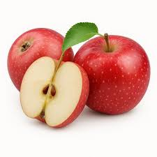
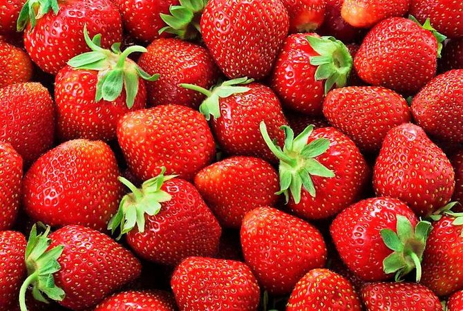
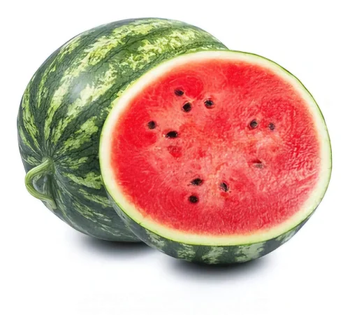
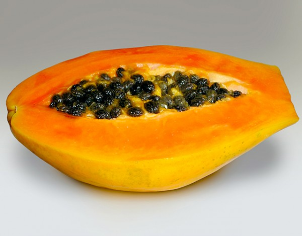
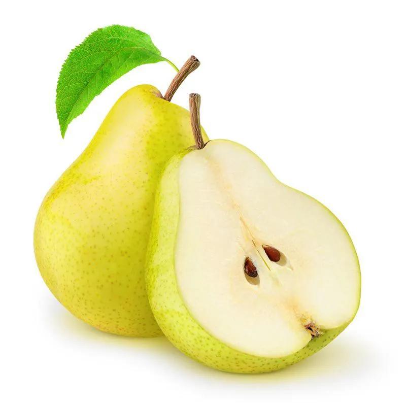

| PRODUTO | IMAGEM | PREÇO | DESCRIÇÃO |
|---|---|---|---|
| Uva |  |
8,00/kg | Pequena e doce, consumida naturalmente ou em sucos e vinhos |
| Banana | 4,50/kg | Macia e doce, ótima fonte de energia e potássio | |
| Laranja | 3,80/kg | Suculenta e cítrica, rica em vitamina C | |
| Maçã |  |
5,00/kg | Fruta crocante, doce e levemente ácida, rica em fibras |
| Abacaxi | 6,50/kg | Tropical, ácido-doce e muito suculento | |
| Manga | 5,50/kg | Polpa macia, doce e aromática | |
| Morango |  |
9,00/bdj. | Pequeno, vermelho e levemente ácido |
| Melancia |  |
2,50/kg | Refrescante, com alto teor de água |
| Mamão |  |
4,20/kg | Macio, doce e auxilia na digestão |
| Pera |  |
6,00/kg | Suave, suculenta e levemente doce |